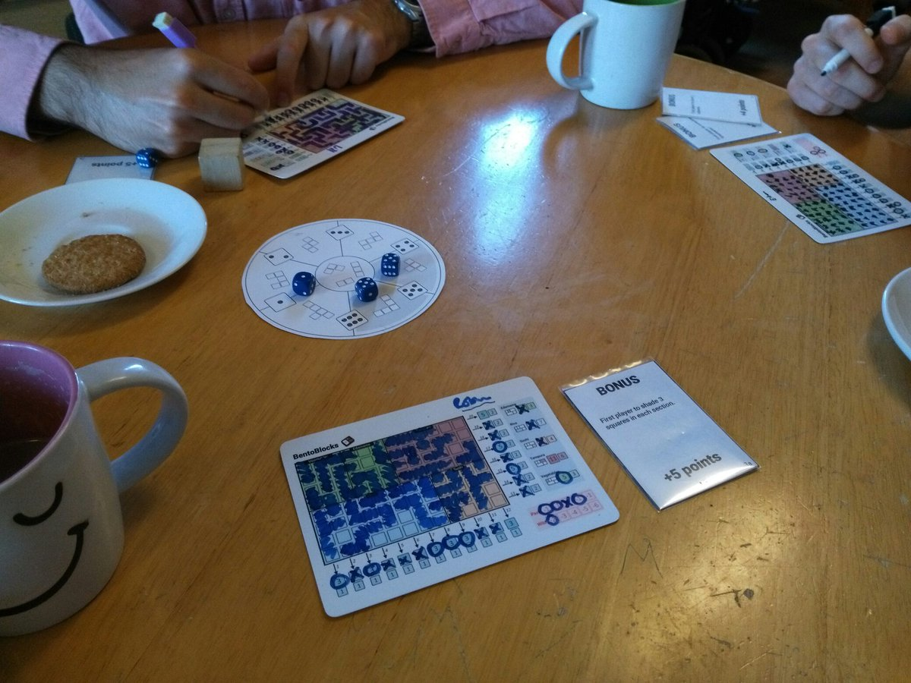

Tag City Design Diary
Tag City is a deluxe roll-and-write game, published by Runes Editions, and released at Essen Spiel 2018. Let's take a trip back in time and I'll show how the game was conceived and developed.

Roll and Write Games
Ever since I played Qwixx, I've been a little bit obsessed with roll-and-write games. The way these work, typically, is that players roll some dice and use those dice to write things onto paper play-sheets. In Qwixx, players are writing a sequence of numbers, which they score points for. It's the genre at its most basic.
There are two things I like most about the genre:
- The games are usually very straightforward. Often players have one sheet of paper to write on, so the rules rarely have complexity beyond that - few moving pieces or resources to keep track of. The simplicity in the roll-and-write genre is so refreshing.
- Choices are permanent! When you make a move in a roll-and-write game, you write your choice on your sheet. You can't take it back, you often can't fix it later. You made a decision and you live with it. I love the tense feeling that this often instils.
Since that first game of Qwixx, I've played LOADS of roll-and-write games and I've run a roll-and-write game-jam.
When I started making my own roll-and-write games, one thing I wanted to focus on was how players interact. Quite a few roll-and-writes can feel a bit like solitaire, with players not really interacting with one another, so I began toying with ideas of different points of interaction. Enter: Tetris Bingo.
One Game a Month: Tetris Bingo
1 Game A Month (1GAM) is a design challenge (mainly for video games) that encourages participants to make a game each month on a specific theme. Obviously making a game each month is no small feat, so the group encourages participants to keep their games simple and focused, which is perfect for roll-and-write games!
During March 2017, for my local 1GAM group, I decided to make a polyomino game, which some players then called Tetris Bingo!
The first play of Tetris Bingo at Dublin's 1GAM. I love the range of emotions show here: joy, sadness and anger!
As I mentioned I was trying to look at different ways to get players interacting with one another and Tetris Bingo used an I-divide-you-choose mechanic. Essentially, the start player would roll the dice and then allocate the dice to different polyominos - each die can be allocated one of two shapes, depending on its value.
Then all the other players, in order, pick which shape they want, taking the appropriate die. When the choice comes back to the start player they only two shapes remaining to pick from. Then everybody has to use the last unchosen die.
Players draw the shapes the dies are associated with onto their player sheets, which shows a grid, and thus they race to complete features on this grid (rows, columns, and coloured blocks). As the game goes on, players need VERY specific shapes to finish their features and that initial dividing mechanic becomes increasingly powerful and increasingly tense.
An early prototype.
BentoBlocks
The game went down VERY well, but I hated the name Tetris Bingo, so the game was in need of a theme! Because of the way the grid is divided up, I settled on the idea of bento-boxes - a type of Japanese lunch box. And thus BentoBlocks was born.
Changing the theme also inspired me to change the mechanics. I created a new player sheet that reflects the shape of a bento box more closely.

One nice side-effect of this change is that it spiced up the gameplay significantly. Recall that players are trying to complete features - rows, columns, and coloured sections. When all the sections were the same size, there was little incentive to go to a specific area. Now all the sections have different sizes and point values, so players have a tough decision to make - should they go for the larger sections that award more points or go for the smaller sections that are easier to finish, but less rewarding?
Playtesting continued with a local playtest group. We were trying out different Tetris-style shapes, board layouts, and point distributions, but the general gameplay loop had already been locked down.
Testing... lots of testing. Here you can see, I tried objective cards at the request of an interested publisher. It didn't work very well.
Around this time, I also added the option for players to choose a wild shape, but taking significant negative points to do so. This was done in part because I realised that some players are simply bad at Tetris! If this was the case, they needed some way to claw back into a competitive position. It was also the case that sometimes a player would need one very specific shape to finish a section, but other players would conspire to make sure it was never available. Now, players could take any shape they wanted, if they're willing to take some damage to their score. This also allowed me to add small versatile shapes (only three blocks in size), which are normally unavailable but could let a struggling player finish a feature in a pinch.
BentoBlocks was released as a free download for a while, as are many of my games, so I could get more player feedback and improve the experience.
The last version of BentoBlocks
Ada Lovelace: Consulting Mathematician
While I was trying to make a solitaire version for BentoBlocks, I developed Ada Lovelace: Consulting Mathematician. The game was meant to be a bit of a joke but had a very positive response from players. BentoBlocks is unworkable as a solo game because the player-interaction is so core to the experience, but Ada Lovelace offers a little something else and lets players mess around with polyomino shapes against a timer.
By the way, you can play a digital version of Ada Lovelace: Consulting Mathematician here. If you like Ada Lovelace: Consulting Mathematician, you'll love Tag City.
Tag City
One fun thing about releasing downloadable games is that you never know what's going to happen to them. Some players made laser-cut copies of BentoBlocks, 3d printing the polyominoes! One player, Stéphane Athimon, really enjoyed the game, offered to translate the rules and just started showing it to publishers on my behalf. You couldn't wish for more enthusiastic fans!
Soon enough, Runes Editions saw BentoBlocks and got in touch. Initially, they weren't interested in roll-and-writes, but liked they way the game had a focus on player interaction. They offered a contract to publish the game and then began developing a retail edition, which would stand head and shoulders above the preceding downloadable version.
I honestly can't remember the order in which changes were made to the game, but Runes were concerned about accessibility and replayability of the game, as well as making it a beautiful and deluxe product.
First of all, they wanted die-cut polyominoes that players could pick up and manipulate, placing them over their player sheets, rotating as flipping them as much as they liked to better visualise how they would fit. And because the shapes are no longer printed on the board, players are free to choose which shapes they use in each game. Six are recommended for the first game, but beyond that, players have a stack of them to choose from each time they play!
A late prototype showing the shape-wheel and die-cut pieces.
Second, Runes wanted to offer different layouts on the player sheets, to encourage different play styles and experiences. This makes the game significantly more competitive! And don't worry, the original BentoBlocks player-boards are in the box too!
Third, Runes wanted to retheme the game to something more exciting. After some back on forth, we settled on a futuristic graffiti battle theme, including hoverboards, a diverse cast, and a graffiti-cat! Grelin came on board to create the stunning visuals in the final game.
This retheme really was a blessing because the new theme helped us to contextualise some of the ideas in the game. The board is now a map of a city and drawing shapes on the map represents racing between different districts to throw up your graffiti tags. Taking a wild-shape is now using a drone to get to hard-to-reach spots. And passing on your turn is now checking your social media - not a good way to spend your time, but in the unlikely event of a tie, the most media-savvy player can snatch the win.
Essen 2018
Tag City was released at Essen Spiel 2018 and is now available in general retail or direct from Runes Editions.